| Symbol |
Description |
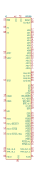
80186 | Description: High-Integration 16-Bit Microprocessor
Keys: MPRO
Datasheet: http://datasheets.chipdb.org/Intel/x86/8018x/datashts/27243002.PDF |
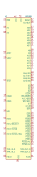
80188 | Description: High-Integration 16-Bit Microprocessor
Keys: MPRO
Datasheet: http://datasheets.chipdb.org/Intel/x86/8018x/datashts/27243002.PDF |
8035 | Description: MCS-48 8-bit Microcontroller, No (EP)ROM, 64B RAM, DIP-40
Keys: MCS-48 uC Microcontroller
Datasheet: None |
8039 | Description: MCS-48 8-bit Microcontroller, No (EP)ROM, 128B RAM, DIP-40
Keys: MCS-48 uC Microcontroller |
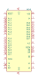
8040 | Description: MCS-48 8-bit Microcontroller, No (EP)ROM, 256B RAM, DIP-40
Keys: MCS-48 uC Microcontroller |
8048 | Description: MCS-48 8-bit Microcontroller, 1KB Mask ROM, 64B RAM, DIP-40
Keys: MCS-48 uC Microcontroller |
8049 | Description: MCS-48 8-bit Microcontroller, 2KB Mask ROM, 128B RAM, DIP-40
Keys: MCS-48 uC Microcontroller |
8050 | Description: MCS-48 8-bit Microcontroller, 4KB Mask ROM, 256B RAM, DIP-40
Keys: MCS-48 uC Microcontroller |
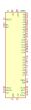
8080 | Description: 8-bit N-channel Microprocessor, DIP-40
Keys: cpu mpu microprocessor
Datasheet: http://datasheets.chipdb.org/Intel/MCS-80/intel-8080.pdf |
8080A | Description: 8-bit N-channel Microprocessor, DIP-40
Keys: cpu mpu microprocessor
Datasheet: http://datasheets.chipdb.org/Intel/MCS-80/intel-8080.pdf |
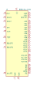
8086_Max_Mode | Description: 8086 (maximum mode), 16-Bit HMOS Microprocessor, PDIP-40
Keys: MPRO
Datasheet: http://datasheets.chipdb.org/Intel/x86/808x/datashts/8086/231455-006.pdf |
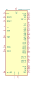
8086_Min_Mode | Description: 8086 (minimum mode), 16-Bit HMOS Microprocessor, PDIP-40
Keys: MPRO
Datasheet: http://datasheets.chipdb.org/Intel/x86/808x/datashts/8086/231455-006.pdf |
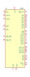
8087 | Description: Math Coprocessor for Intel 8086/8088/80186/80188 microprocessors, PDIP-40
Keys: FPU
Datasheet: http://datasheets.chipdb.org/Intel/x86/808x/datashts/8087/205835-007.pdf |
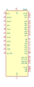
8088 | Description: 8088 (minimum mode), 8-Bit HMOS Microprocessor, PDIP-40
Keys: MPRO
Datasheet: http://datasheets.chipdb.org/Intel/x86/808x/datashts/8088/231456-006.pdf |
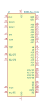
8088_Max_Mode | Description: 8088 (maximum mode), 8-Bit HMOS Microprocessor, PDIP-40
Keys: MPRO
Datasheet: http://datasheets.chipdb.org/Intel/x86/808x/datashts/8088/231456-006.pdf |
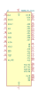
8088_Min_Mode | Description: 8088 (minimum mode), 8-Bit HMOS Microprocessor, PDIP-40
Keys: MPRO
Datasheet: http://datasheets.chipdb.org/Intel/x86/808x/datashts/8088/231456-006.pdf |
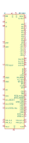
80C186XL | Description: 16-Bit High-Integration Embedded Processor
Keys: MPRO
Datasheet: http://datasheets.chipdb.org/Intel/x86/8018x/datashts/27243104.PDF |
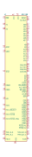
80C188 | Description: CHMOS High-Integration 16-Bit Microprocessor
Keys: MPRO
Datasheet: http://datasheets.chipdb.org/Intel/x86/8018x/datashts/80188/intel-80c188.pdf |
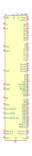
80C188XL | Description: 16-Bit High-Integration Embedded Processor
Keys: MPRO
Datasheet: http://datasheets.chipdb.org/Intel/x86/8018x/datashts/27243104.PDF |
8748 | Description: i8748, MCS-48 8-bit Microcontroller with Internal EPROM, 1KB EPROM, 64B RAM, DIP-40
Keys: MCS-48 uC Microcontroller
Datasheet: None |
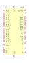
8749 | Description: i8748, MCS-48 8-bit Microcontroller with Internal EPROM, 2KB EPROM, 128B RAM, DIP-40
Keys: MCS-48 uC Microcontroller |
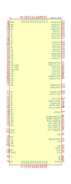
I386EX_PQFP | Description: Intel I386EX Embedded microprocessor, PQFP-132
Keys: MPRO
Datasheet: None |
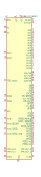
IA186XLPLC68IR2 | Description: MCU Replacement for Intel 80C186XL
Keys: MPRO
Datasheet: http://www.innovasic.com/upload/products/Innovasic_IA186XL_IA188XL_Data_Sheet_20110706_2.pdf |
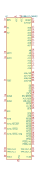
IA188XLPLC68IR2 | Description: MCU Replacement for Intel 80C188XL
Keys: MPRO
Datasheet: http://www.innovasic.com/upload/products/Innovasic_IA186XL_IA188XL_Data_Sheet_20110706_2.pdf |
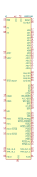
M80C186 | Description: CHMOS High-Integration 16-Bit Microprocessor
Keys: MPRO
Datasheet: http://datasheets.chipdb.org/Intel/x86/8018x/datashts/80186/27050008.PDF |
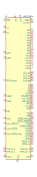
M80C186XL | Description: 16-Bit High-Integration Embedded Processor
Keys: MPRO
Datasheet: http://datasheets.chipdb.org/Intel/x86/8018x/datashts/80186/27127602.pdf |